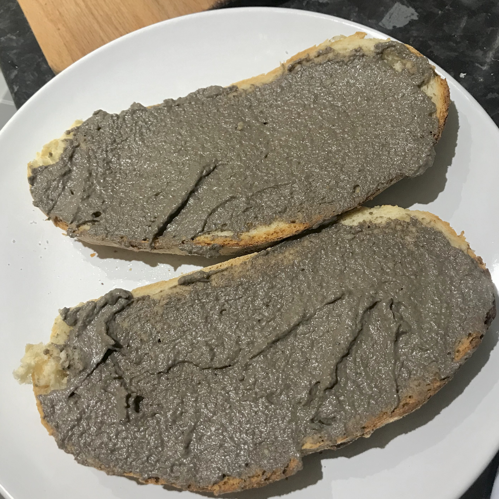

HOME ABOUT BLOG PORTFOLIO CONTACT

Now that lockdown is easing off in the UK, I was able to spend some time with friends for a picnic recently. One of them kindly made a mushroom pate so delicious that I simply had to recreate it.
While their version was coarse, as they opted to blend the mushrooms in a food processor prior to cooking, I decided to make a smoother, silkier texture by blending the mushrooms after cooking: Just remember to allow the mixture to cool before blending. Either way works excellently when following this recipe!
Ingredients:
— 450g fresh mushrooms
(I used a blend of chestnut and portbello.)
— 3 minced garlic cloves
— A few tablespoons of fresh chopped thyme, to taste
(I recommend starting with around 5 sprigs and adding more if desired.)
— 3 tbsp vegan butter
— Salt and pepper to taste
— 1 tbsp balsalmic vinegar
(Technically optional, but it does excellently at rounding the flavour.)
— 60g vegan cream cheese
— 1 tbsp honey, or maple syrup as a vegan alternative
(I used black truffle honey, which is entirely optional but added a really complex element.)
Method:
1. Heat the butter in a large pan, before adding the mushrooms and garlic. Ideally, they should be diced so as to speed up the cooking process.
2. Season with salt and pepper, add the balsalmic and honey and cook until the mushrooms are tender.
3. Turn off the heat and add the cream cheese, stirring until well combined.
4. Allow to cool slightly before blending until very smooth.
5. Pour into a jar or container of your choice before refrigerating for at least 1 hour.
6. Enjoy! I recommend serving with a robust white loaf, perhaps a sourdough. Would you like to see my go-to sourdough recipe? Let me know on Instagram and Twitter!